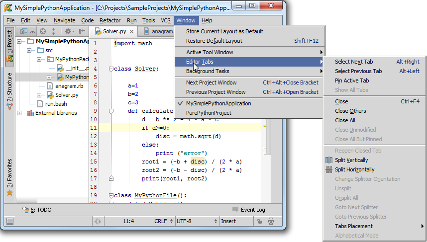
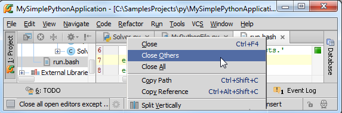
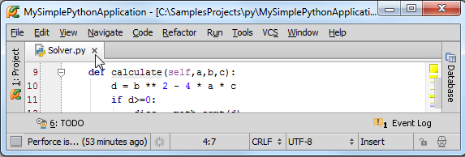
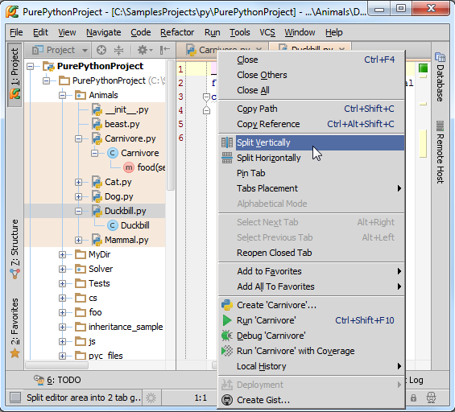
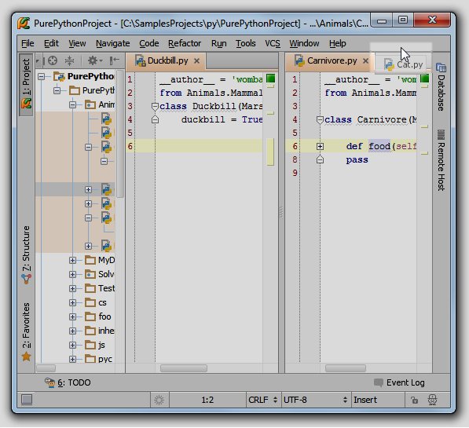
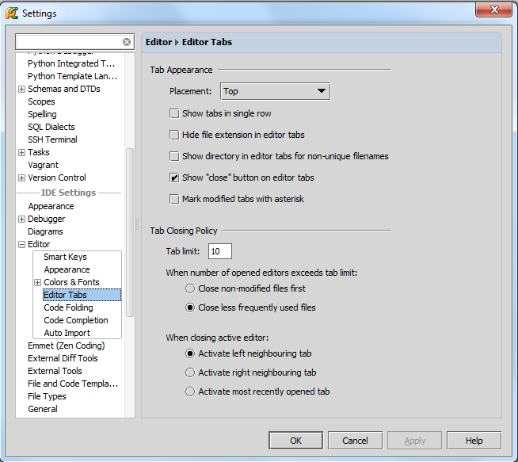

1、主题
我们已经注意到Pycharm的主编辑框是基于窗口选项卡机制显示的，Pycharm选项卡多种多样，这里我们将详细介绍这种选项卡机制。
2、激活的选项卡
每当我们打开一个Python文件时open a file for editing，它都会对应打开一个选项卡窗口，当前处于操作状态的选项卡成为激活选项卡。
3、选项卡行为属性
在主菜单中找到选项卡列表（Window → Editor Tabs）：

或者使用选项卡标题栏区域的快捷菜单：

4、关闭编辑选项卡
关闭编辑选项卡的方法多种多样，依据不同设置而不同settings：
（1）在超出窗口容纳的最大数量时，选项卡会自动关闭。例如Tab limit定义了一次所能显示选项卡的最大数量，当一个新的选项卡被打开后，Pycharm就会根据已有的管理策略来关闭一个已经打开的选项卡。
（2）我们可以单击标题旁边的叉号来手动关闭对应选项卡。

注意这个叉号的显示也是可以设置的（勾选editor选项卡中的Show "close" button选项）
（3）按下Ctrl+F4快捷键来关闭当前激活的选项卡。
（4）使用主菜单命令Window → Editor Tabs或者快捷菜单对应命令。
5、选项卡之间的切换
Pycharm提供多种方式来完成多个选项卡之间的跳转：
（1）使用鼠标单击对应的选项卡标题栏完成切换
（2）使用Alt+Right快捷键依次打开右侧的编辑器选项卡，使用Alt+Left 快捷键依次打开左侧的编辑器选项卡。
（3）使用标题区域快捷菜单的导航命令Select Next Tab/Select Previous Tab，或者主菜单上的Window → Editor Tabs命令。
6、选项卡的拆分与合并
什么情况下需要对选项卡进行拆分呢？假设我们编写的文件非常长，我们希望同时显示这个文件的不同部分，或者希望在一个窗口中同时查看多个文件，这种情况下就需要对选项卡进行拆分。另外一种情况就是在创建选项卡组groupes of tabs的时候也会用到拆分技术。
在选项卡标题区域的快捷菜单中有拆分命令：

需要强调的是在系统定义的快捷键配置方案中（比如说默认的Windows快捷键方案）是没有与拆分命令相关联的快捷键的，我们向其中自定义添加对应的快捷键设置。详见Configuring keyboard schemes和Configuring keyboard shortcuts。
拆分后的窗口共享一个剪贴板，因此可以很方便的在各个选项卡之间进行复制粘贴，当然也可以将一个选项卡组的文件拖动到另一个选项卡组中。

也可以在已拆分和未拆分的选项卡组中进行切换，使用主菜单命令Window → Editor Tabs → Goto Next Splitter/Goro Previous Splitter。
需要强调的是在系统定义的快捷键配置方案中（比如说默认的Windows快捷键方案）是没有与拆分命令相关联的快捷键的，我们向其中自定义添加对应的快捷键设置。详见Configuring keyboard schemes和Configuring keyboard shortcuts。
Pycharm允许我们更改拆分方向。例如我们已经创建了一个垂直方向的拆分窗口，并且不想再看到水平拆分，只需选择标题区域快捷菜单命令Change Splitter Orientation，或者主菜单命令Window → Editor Tabs。
当我们厌倦了拆分的窗口后，可以通过择标题区域快捷菜单命令Unsplit来取消拆分，或者是主菜单命令Window → Editor Tabs。当然这样只会取消当前选项卡组的拆分，如果希望取消所有拆分，选择Unsplit All命令即可。
7、选项卡属性配置
我们可以在Pycharm设置对话框中更改编辑框选项卡的属性配置。打开Editor Tabs页面（单击主工具栏的设置按钮，或者选择File→Settings主菜单命令，展开Editor节点，单击Editor Tabs），依据个人习惯进行更改：

更多选项卡信息参见Managing editor tabs。